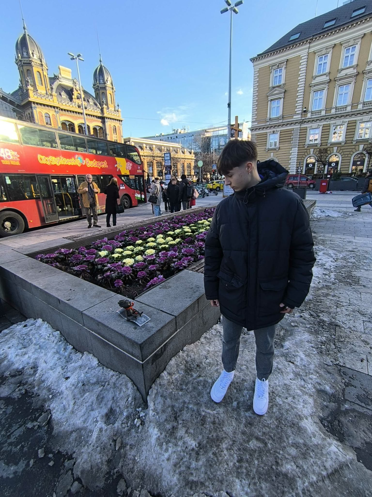
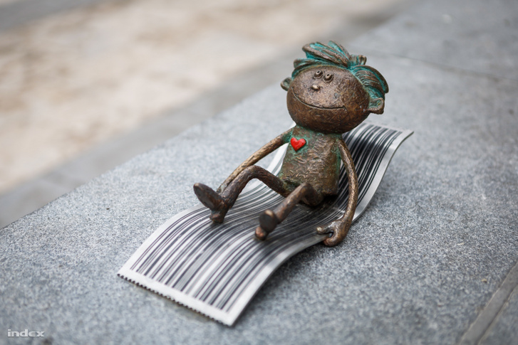
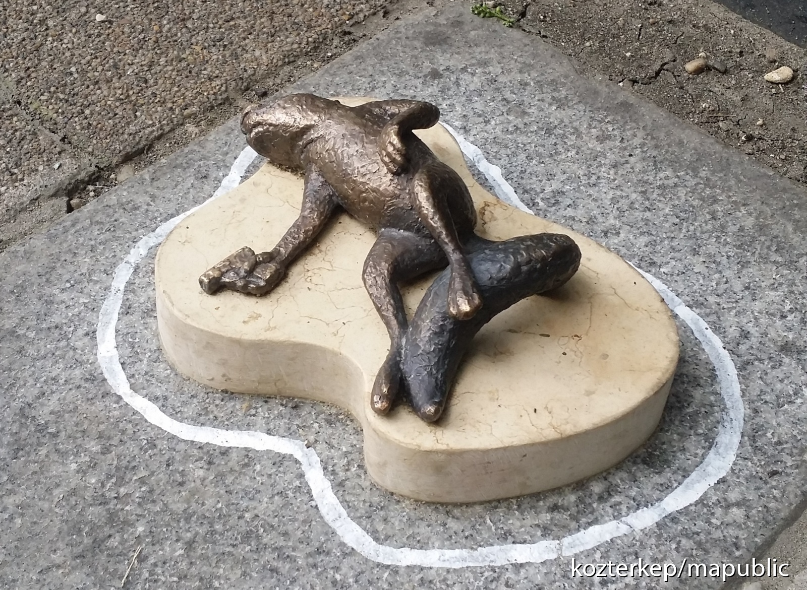
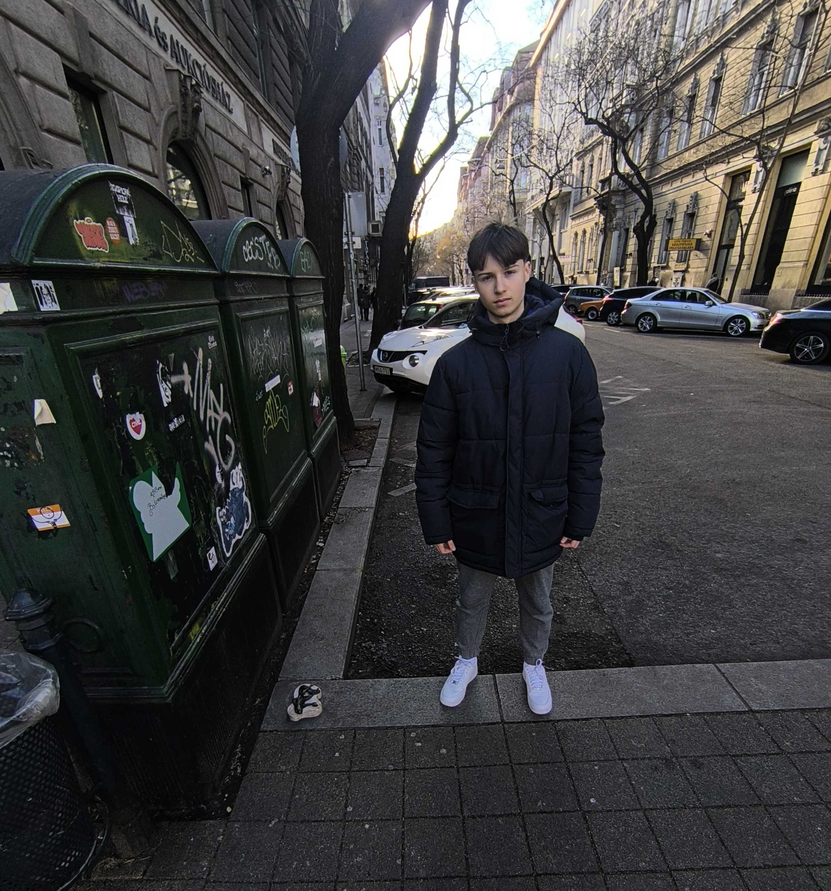

A Kolodkó‑miniszobrok sorozatát Mihály Kolodko (ukrán‑magyar szobrász, Mykhailo Kolodko) hozta létre, aki apró bronzszobrokat helyez el Budapest és más városok közterein. Művészetét a „guerrilla szobrászat” jellemzi: ezek a kis alkotások gyakran engedély nélkül, váratlan helyeken bukkanak fel, így a városi környezet felfedezését teszik élménnyé.
A Skála Kópé miniszobor egy ilyen bronzfigura, amely a Nyugati tér környékén található Budapesten, és egykori Skála áruházlánc híres reklámmascottjára, a Kópéra emlékeztet. A Skála az 1980-as években a magyar városi fogyasztói kultúrában fontos szerepet játszott, és a Kópé karakter a magyar köztudatban nosztalgikus emlékeket idéz fel. Kolodko ezzel az alkotással nem csupán egy kedvelt figurát jelenít meg, hanem a szocialista korszak városi emlékezetének egy darabját hozza vissza az utcára, ahol a régi és az új urbánus élet találkozik.
A figurák – így a Skála Kópé is – komolyabb üzenetet hordoznak annál, mint amilyennek elsőre tűnnek. Vicces, bájos megjelenésük mellett történelmi, kulturális vagy társadalmi utalásokat rejtenek: emlékeztetnek a kollektív emlékekre, a popkultúrára vagy akár politikai kontextusokra is. Sok budapesti és turista kincskeresésként járja a várost, hogy felfedezze ezeket a rejtett alkotásokat, így a miniszobrok a városi közösség interakcióját és urbánus felfedezést is ösztönzik.
Összességében tehát a Skála Kópé miniszobor egyszerre művészi játékosság, nosztalgia és kulturális reflexió: kis méretű formában nagy jelentést hordoz a köztereken, és hozzájárul Kolodko egyedi, Budapestet gazdagító művészeti világához.


A „Halott mókus” (Dead Squirrel) egy apró bronz szobor, melyet a Kolodko Mihály nevű ukrán–magyar művész helyezett el Budapesten, a Jászai Mari tér–Falk Miksa utca környékén, közvetlenül a híres detektív, Columbo‑szobor közelében. A műalkotás 2018‑ban jelent meg, és a tipikus Kolodko‑stílust képviseli: váratlan, humoros, mégis gondolatébresztő mini‑szobor, amit gyakran gerillahadműveletként helyez el a művész a városi térben, engedély nélkül.
A kis bronzmókus háton fekszik, pisztollyal a mancsai között, teste körül pedig a krimi‑filmekből ismert krétavonal látható, mintha éppen egy bűnügyi helyszín lenne. A mű eredeti címe „Ars longa, vita brevis” („A művészet örök, de az élet rövid”), utalva arra a gondolatra, hogy a művészet és a képzelet túlélheti az élet véges voltát.
A szobor nem csupán egy egyszerű figura: ironikus parafrázis a kortárs művészetre és a városi legendákra. Kolodko ezzel a jelenettel többek között Maurizio Cattelan olasz művész 1996‑os installációjára utal, amelyben szintén állatok szerepelnek provokatív módon. A mű így egyszerre szórakoztató, provokatív és reflexív: elgondolkodtat a halál, a nyomozás és a művészet viszonyáról, valamint a közterekben rejtőző jelentések felfedezéséről.
Míg elsőre csak egy bohókás „rejtett szobrocskának” tűnik, a Halott mókus valójában egy komplex művészi gesztus: a városi környezetbe integrálódó humor és művészet találkozása, amely Kolodko teljes életművének egyik jellegzetes darabja.

